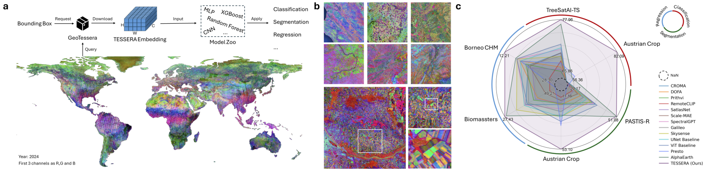
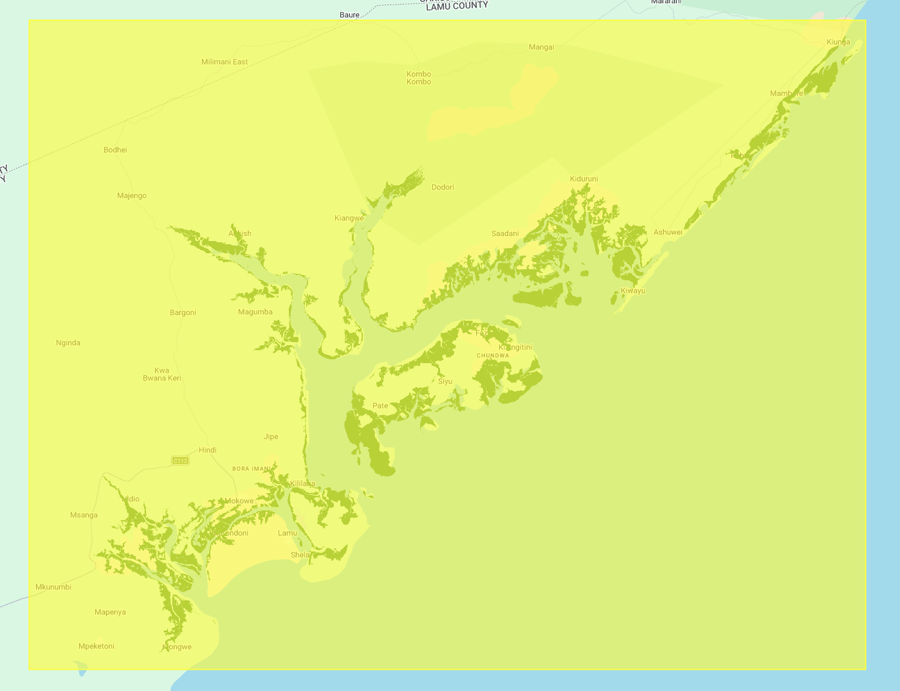
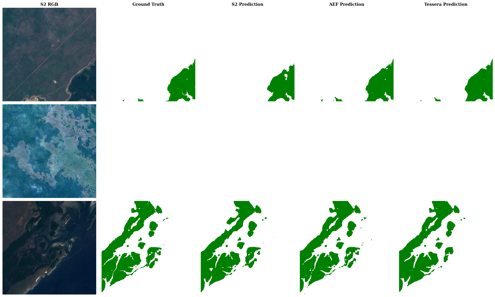

Jump here if you want to see the experiment result.
For months I keep hearing about "Earth Embeddings". Something that is not exactly new because I remember the first earth embeddings I heard was MajorTOM which comes from the combination of Sentinel 1 and 2. I'm not sure if this is the first Earth embeddings though. AlphaEarth Embeddings is definitely the first one I read about on a bit more technical level, and the idea to compress information from different sensor into a single embedding is really an interesting one. The other one I'm quite interested is TESSERA.
AlphaEarth Embeddings

TESSERA Embeddings

Here's a quick summary of similarities and differences between the 2 embeddings.
Similarities:
- Embedding-as-Data Paradigm: both models deliver precomputed, task-agnostic features that can be used directly with lightweight adaptation heads, such as small MLPs, for downstream tasks like classification and regression.
- Global and Annual Coverage: both projects have released global, annual embedding maps at a 10m spatial resolution covering the years 2017 through 2024 (with a note here).
- Multi-Modal Time Series: both models leverage multi-temporal satellite data, specifically integrating optical (Sentinel-2) and radar (Sentinel-1) observations.
-
Label Efficiency: a primary focus for both is delivering high performance in
"low-shot"
Refers to a machine learning regime where a model is trained or adapted
using an extremely limited amount of labeled data.
AEF defines "low-shot" as using tens to hundreds of samples to simulate performance in data-scarce environments. To test the limits of the model, they evaluate "very-low shot" or "extreme data sparsity" using as few as 1 or 10 labeled samples per class.
TESSERA evaluates label efficiency by looking at specific label ratios, demonstrating that the model remains highly effective even when using only 1% of the available labels in a dataset. They define a "challenging few-shot scenario" more specifically as training with only 1 to 20 labeled samples per class. regimes, where only a small amount of labeled data is available for training - Quantization: both use 8-bit integer (int8) quantization to significantly reduce the storage and bandwidth requirements of their massive global datasets while maintaining high accuracy.
Differences:
| Feature | TESSERA Embeddings | AlphaEarth Foundations (AEF) |
|---|---|---|
| Primary Data Sources | Sentinel-1 and Sentinel-2 | Sentinel-1, Sentinel-2, Landsat 8/9, PALSAR-2, GEDI, ERA5-Land, GRACE, GLO-30, NLCD, and Text |
| Training Objective | Redundancy reduction:
Barlow Twins loss
Barlow Twins Loss: TESSERA minimizes the
cross-correlation matrix between two different "views" of the
same pixel location. Mechanism: Includes an invariance term for similarity and a redundancy reduction term for unique information. Implication: Creates efficient, compact features robust to clouds or orbital patterns. |
Multi-objective: contrastive (teacher-student) Imagine a teacher who sees a perfectly clear satellite image and a student who sees one that is half-covered by clouds. AEF is trained so that the "student" must guess what the missing parts look like so well that their answer matches the "teacher's" clear view. , data reconstruction, and text alignment |
| Encoder Size | ~46 Million parameters | ~480 Million parameters |
| Open Source Status | Fully open (weights, code, and embeddings) | Weights not fully open; embeddings released under open license |
| Temporal Handling | Sparse random temporal sampling invariance (fixed 40 timesteps) | Implicit decoder treating time as a
continuous variable
AEF employs an implicit decoder that treats time and sensor
parameters as continuous variables. It can produce a temporal
summary for any "valid period," whether it is a single day, a
month, or a year . Implication: This allows AEF to reconcile non-uniformly sampled records into a continuous record. It can interpolate (predict between observations) or extrapolate (predict beyond observations) to provide "analysis-ready" summaries for any arbitrary time window without needing to retrain the model. |
| Embedding Size | 128 dimensions | 64 dimensions |
| Geographic Logic | Pixel-wise modeling with global shuffling to break spatial autocorrelation | Embedding field model using a von Mises-Fisher (VMF) spatial bottleneck |
So in this post, I'm going to write the experiment result I was running. The big idea is to compare the performance of the same deep learning model given different data. The aforementioned data are: Sentinel-2 (with additional bands), AlphaEarth Foundation Embeddings (AEF), and TESSERA Embeddings. The task is binary semantic segmentation task, trying to predict mangrove land cover.
Getting the data
Since I won't be doing so much hyperparameter tuning, acquiring and preparing the data became the most time-consuming part.
An important note on selecting the AOI: in this experiment, there are at least 1 constrain, that is the availability of the ground truth/label, in other words the coverage of GMW data on the said years. However, there are another thing to consider, the availability of TESSERA. TESSERA is relatively new, and unlike AlphaEarth Embeddings which is developed by a tech-giant (google), it was mainly driven by University of Cambridge. For TESSERA, on global scale the most covered year is 2024 (it is available for the entire globe if I'm not mistaken). On the other hand, GMW data is limited up to 2020 (at least the one I have access to). The solution is to find a location where both GMW and TESSERA (on 2020) are available. Luckily, the developer provided a way to check availability of TESSERA through this repository: https://github.com/ucam-eo/geotessera.
The availability for Sentinel-2 and AEF won't be big a problem.
Now that the data availability problem has been solved, here's a summary of the data preparation process (and some lessons learned):
Global Mangrove Watch (GMW) Mask/Label
GMW is the most straightforward data to get. It's a binary mask/label of mangrove extent, which is already in the form of a single image. So I just need to clip it to my AOI and export it. The size of the raster is also the smallest compared with the other data (not even 1 MB).
-
Source: 2020 annual mangrove extent from awesome-gee-community-catalog
Global Mangrove Watch Dataset
(
projects/sat-io/open-datasets/GMW/annual-extent/GMW_MNG_2020). -
Processing: mosaic the
ImageCollectionto one image, thenclipto my AOI before export. -
Parameters:
region= my AOI geometry,crs=EPSG:4326,scale= 10 m,maxPixels=1e13(aligned with the 10 m Sentinel-2 tiles). - Size: less than 2 Mb total.
Sentinel 2
For Sentinel 2, I adapted some of the process from this paper by Davide Lomeo. This one is also relatively straightforward. GEE obviously helps a lot by providing the data and the compute so I don't have to locally compute the median and the spectral indices. That would be a storage and computation nightmare.
-
Source:
COPERNICUS/S2_HARMONIZED, filtered to my AOI (filterBounds) and to 1 Jan 2020 – 1 Jan 2021 (filterDate), keeping scenes withCLOUDY_PIXEL_PERCENTAGE < 30. -
Cloud mask:
QA60bits 10 (opaque clouds) and 11 (cirrus) masked out; surface reflectance scaled by dividing band values by10000. -
Composite: pixel-wise
median()across the filtered collection, then spectral indices added on that median image:NDVI,NDWI,MNDWI,NDSI,NDMI,EVI,EVI2,GOSAVI,SAVI. -
Bands exported (all as
float):B1,B2,B3,B4,B5,B6,B7,B8,B8A,B9,B11,B12, plus the indices above. -
Parameters:
region= AOI geometry,crs=EPSG:4326,scale= 10 m,maxPixels=1e13. - Size: ~6,9 GB.
AlphaEarth Embeddings
AlphaEarth Embeddings' is also easy to get using GEE, basically just filter according to my AOI and the correct date, then mosaic and convert the data to float.
-
Source:
GOOGLE/SATELLITE_EMBEDDING/V1/ANNUAL, filtered to my AOI (filterBounds) and to 1 Jan 2020 – 1 Jan 2021 (filterDate). -
Bands exported (64, all as
float): -
Parameters:
region= AOI geometry,crs=EPSG:4326,scale= 10 m,maxPixels=1e13. - Size: ~6.9 GB.
Before using GEE, I also explored the cloud-optimized-geotiff (COG) data for
AEF from source.coop,
upon trying, I always get request timeout, perhaps because the server location.
I tried this because I want to have as seamless development experience as
possible, since I can use python to access data from source coop. Of course
there's also Python API for GEE, but it still require authentication and the
downloaded data is stored in google drive instead of directly locally. In fact
the very first plan is to utilize the COG format served in source.coop.
The idea is to only retrieve the necessary data ('on-the-fly'
is even possible) according to my AOI and data bounds, so I don't have to
store big files locally.
In the end, GEE come to the rescue.
TESSERA Embeddings
This one is unfortunatelly not available in GEE (to my knowledge), the developer is kind enough to enable data request through the github repo though. As a note, since they made the model publicly available, if you have a good machine to run the model, you can even generate your own embeddings, I tried this on colab, but my AOI is quite huge and my patience is very thin. In the end I just look for the data that is already available.
- Github repo for data download: https://github.com/ucam-eo/geotessera.
- My download procedure: create a download tiles (bounding box) according to the AOI, then loop through the tiles to download the data.
-
bandto export: all (128 bands).compressionused:lzw. Outputformat:GeoTIFF. - Size: ~30 GB.
Confession
I initially selected an AOI where TESSERA is not available for
2020. This is because I naively assume that just like AEF, TESSERA would also
be globally available for each year. Why wouldn't I, right? LOL.
I spent (read: waste) quite some time to get the TESSERA embeddings on that
AOI before finally accept reality.
Data Processing
Now that I have all the necessary data accessible, I need to fit them into the format that torchgeo's models can take.
"Traditionally", the way geospatial data prepared for deep learning use case is by "cutting" them into patches. This is quite a problem for me since I have a limited storage capacity. Generating image patches practicaly means generating "duplicate" images, because the information stored in the mosaic (or tiled) imagery and the patches are practically the same.
This is where torchgeo is super helpful. Torchgeo has provided a "ready-to-use" dataset classes. Using these data classes remove the need to create patches for the training phase. The dataset will be chipped on-the-fly during training. What's more, the dataset will also be aligned (e.g. alignment between image and mask) during the chipping process.
In my case, I only need to create a custom dataset for the mask since it is
not available in torchgeo. Also a semi-custom dataset for Sentinel-2 since the
file naming in my local is differ from the
standard Sentinel-2 naming,
like this one (I think):
S2A_MSIL1C_20170105T013442_N0204_R031_
T53NMJ_20170105T013443
check here
and here
for more info.
plus I already have additional indices bands ready on the dataset, which is
not the starndard for "vanilla" Sentinel-2 L2A data.
The code itself is relatively simple, not even a 100 lines. Below is the excerpt:
class S2Dataset(RasterDataset): """Sentinel-2 composite GeoTIFFs exported from GEE. Files are named ``s2_box_*.tif`` with 21 bands (12 spectral + 9 indices). """ filename_glob = "s2_box_*.*" filename_regex = ".*" all_bands = ( "B1", "B2", "B3", "B4", "B5", "B6", "B7", "B8", "B8A", "B9", "B11", "B12", "NDVI", "NDWI", "MNDWI", "NDSI", "NDMI", "EVI", "EVI2", "GOSAVI", "SAVI", ) is_image = True class GMWMaskDataset(RasterDataset): """Global Mangrove Watch extent mask. Files are named ``gmw_extent_box_*.tif`` with a single binary band. """ filename_glob = "gmw_extent_box_*.*" filename_regex = ".*" all_bands = ("mask",) is_image = False
Another thing that needs attention is the fact that the GMW label is relatively sparse compared with the image, as you can see in the example below. This means, many of my image patches will overlap with an area with no mask.

To my knowledge, torchgeo doesn't have a built-in feature currently to filter out patches with no mask overlap. In the beginning, I tried to train the model as-is, meaning to also include the patches where there's no label. This results in a sub-optimal training metrics, so I had to create a custom script to prevent patches with no mask getting into the actual training data.
def filter_chips_with_mask( mask_dataset: GeoDataset, sampler: GridGeoSampler, n_samples: int = 2, ) -> tuple[list[BoundingBox], dict[str, list[BoundingBox]]]: """Keep only chips where the mask contains at least one positive pixel. Also collects the first ``n_samples`` chips with mask and without mask for use as fixed sample predictions. Args: mask_dataset: The mask-only GeoDataset (not the full intersection). sampler: A GridGeoSampler to iterate over. n_samples: Number of sample chips to collect per category. Returns: (valid_bboxes, sample_chips) where sample_chips has keys ``"with_mask"`` and ``"no_mask"``. """ valid: list[BoundingBox] = [] with_mask_samples: list[BoundingBox] = [] no_mask_samples: list[BoundingBox] = [] total = len(sampler) for i, bbox in enumerate(sampler): sample = mask_dataset[bbox] has_mask = sample["mask"].sum() > 0 if has_mask: valid.append(bbox) if len(with_mask_samples) < n_samples: with_mask_samples.append(bbox) else: if len(no_mask_samples) < n_samples: no_mask_samples.append(bbox) if (i + 1) % 100 == 0: logging.info(f"Filtering chips: {i + 1}/{total} checked, {len(valid)} valid") logging.info(f"Filtering complete: {len(valid)}/{total} chips have mask pixels") samples = {"with_mask": with_mask_samples, "no_mask": no_mask_samples} logging.info(f"Sample chips collected: {len(with_mask_samples)} with mask, {len(no_mask_samples)} no mask") return valid, samples
This script is also used to collect the prediction sample. I do this as a sanity check, making sure that the model is not biased towards positive labels in the end. Which you can see later in the result (second row of the image), the model indeed predict nothing when there's actually an empty patch.
Besides that, I apply a "special" treatment for TESSERA data. During the training I noticed that the run getting slower the more bands the image has. For S2 data it would take around 1-3 mins per epoch, AEF maybe twice (or triple) of that, but for TESSERA, one epoch could take 30 mins (unacceptable!).
I'll say it again: my patience is thin. After consulting to the council of AI,
I decided to convert the original tiff to COG format and set the compression to
none (I set the compression to lzw when I download it using
geotessera). Thank God, this improves the training speed significantly.
Training
Once the data is prepared, the training part is a piece of cake. I used config-based style so I only have to change the config file if I need to change the parameters. The config file is a yaml, that look like this:
model_params: model: unet # options: valid model from torchgeo backbone: resnet50 loss: dice training_params: batch_size: 4 epochs: 100 lr: 0.0005 workers: 4 early_stopping_patience: 5 data: source: tessera # options: s2, aef, tessera raw_dir: data/0_raw chip_size: 512 stride: 256 train_ratio: 0.8 boxes: [0, 1] only_mask: true output: dir: models # experiment folder to be used by MLFlow experiment: my_exp # experiment name to use on MLFlow
The initial plan is just to use one model and train it using different data source. I also make the other training params the same for those different data to make sure that differences in performance can be address to the data source.
Evaluating the process and the result of the training, something peculiar came out. It seems to me that models trained using TESSERA are "underperforming". I put quote there because I don't really have a benchmark to say it underperforms. The closes benchmark I have is my own model trained using S2 data.
So I decided to try 2 different model, SegFormer (attention-based model) and DeepLabV3+ with ResNet152 backbone (more training parameters). I chose this 2 models because I was thinking maybe because TESSERA has 128 bands, UNet with ResNet50 is too small for it to be properly learn from. the baseline model (UNet with ResNet50) got about 37M training parameters, while SegFormer and DeepLabV3+ have around 41M and 67M parameters respectively.
I also just want to see if attention-based model helps.
Experiment Result
FINALLY.

Observaton/Analysis
Here's some highlight:
- Model trained using S2 data, often got a spike on their validation metrics (happened quite consistently)
- These noises/spikes could indicate sensitivity to the specific validation patches — possibly some patches with cloud residuals or spectral artifacts in the median composite.
- AEF generalizes remarkably well: val loss keeps decreasing steadily and ends at ~0.014 — an order of magnitude lower than Tessera's. The train-val gap is the smallest of all three.
- Not only performing well on the IoU, model trained using AEF also train for shorter epochs.
- Despite TESSERA have lower train loss consistently, the inverse happened on validation loss. A classic overfitting case. The large gap between train and val performance is a red flag. Train loss drops the lowest (~0.033) but val loss plateaus high (~0.155) and never meaningfully improves after epoch 1
- Switching to larger/different architectures (DeepLabV3+, SegFormer) does not meaningfully fix Tessera's issues. This suggests the bottleneck is in the data/embeddings themselves, not model capacity.
Looking at the prediction image, AlphaEarth Embeddings prediction looks clean and accurate, almost perfectly matching the ground truth. Sentinel 2 is also pretty good, but you can see some minor discrepancies. TESSERA, on the other hand, has some noticeable gaps and inaccuracies, especially in the more complex areas with lots of small water bodies. This totally aligns with its higher loss and lower IoU in the metrics table.
Meanwhile in the TESSERA comparison, Segformer manages to pull ahead visually. You can see it captures the intricate shapes of the land and water a bit better than UNet and DeepLabV3+. It's not a huge difference, but those little details add up, which is probably why its IoU was slightly higher. UNet and DeepLabV3+ are quite similar in their predictions here.
A probable reason, why TESSERA seems underperforming is overfitting due to high dimensionality. Having 128 input channels means more parameters in the first layer and higher model capacity right at the input. That perhaps mean, I need more data to properly constrain the model. Since my dataset isn’t large enough, the model perhaps: overfit to noise then fail to generalize. Which shows up exactly like what we're seeing: decent training behavior, but worse validation performance.
I won't really put a conclusion here, but if I have to, I think TESSERA need some more pre-processing before it can perform well in this case.
To close it
It was fun to touch this kind of project again and to be able to utilize torchgeo to the fullest, especially about the fact that I don't need to generate image patches.